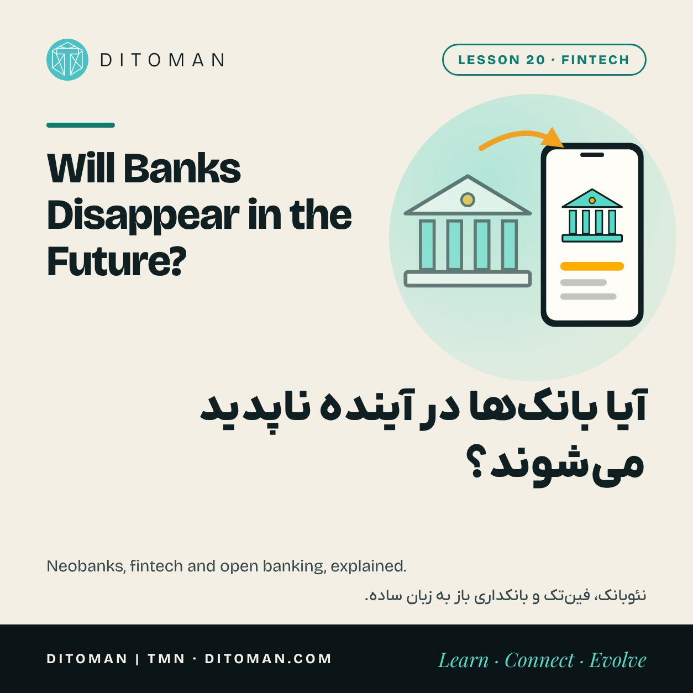

Les banques vont-elles disparaître à l'avenir ?
آیا بانکها در آینده ناپدید میشوند؟
Les agences ferment et les applications ouvrent. Cette leçon distingue ce que fait une banque de l'endroit où elle le fait, explique simplement les néobanques et l'open banking, et montre quels métiers ont encore besoin d'une banque derrière l'écran.
شعبهها بسته میشوند و اپها باز. این درس کاری را که بانک میکند از جایی که آن کار انجام میشود جدا میکند، نئوبانک و بانکداری باز را به زبان ساده توضیح میدهد و نشان میدهد کدام کارها هنوز پشت صفحه به بانک نیاز دارند.
Contenu de la leçon
محتوای درس
Lisez la leçon en anglais ou en persan.
درس را به فارسی یا انگلیسی بخوانید.
Pensez à la dernière fois que vous êtes entré dans une agence bancaire. Pour beaucoup, c'était il y a des années. Ouvrir un compte, envoyer de l'argent, payer une facture, même emprunter se fait désormais sur téléphone.
On peut donc se demander : si l'on n'a plus besoin du bâtiment, a-t-on encore besoin de la banque ? Pour répondre, il faut voir ce que fait vraiment une banque. Ce n'est pas un métier. Ce sont quatre.
01. Les quatre métiers d'une banque
Garder l'argent : détenir les dépôts et les rendre sur demande.
Déplacer de l'argent : paiements, virements et cartes, comme dans la leçon 14.
Prêter : transformer les dépôts à court terme de nombreuses personnes en prêts à long terme pour les logements et les entreprises.
Porter la confiance : détenir une licence, être supervisée et s'appuyer sur une garantie des dépôts, comme dans la leçon 13.
Pendant un siècle, ces quatre métiers formaient un seul bloc, dans un seul bâtiment. La technologie les sépare désormais, et différentes entreprises se disputent chaque morceau.
02. Ce qu'est une fintech
Fintech est l'abréviation de technologie financière : des entreprises qui utilisent le logiciel pour mieux faire un métier financier. Une application de paiement, de crédit, d'investissement ou d'assurance est une fintech.
La plupart des fintechs n'ont pas de licence bancaire. Elles construisent l'écran que vous touchez, et derrière l'écran une banque agréée détient l'argent. Vous voyez l'appli. La banque est le moteur en dessous.
03. Ce qu'est une néobanque
Une néobanque est une banque sans agences. Tout, de la vérification d'identité à la livraison de la carte, se fait dans une application.
Certaines néobanques ont leur propre licence. D'autres sont une marque construite sur une banque traditionnelle. En Iran, les exemples connus appartiennent à ce second groupe : Blubank s'appuie sur Saman Bank, Bankino sur Middle East Bank et Wepod sur Pasargad Bank.
Le modèle peut devenir très grand. Le brésilien Nubank, fondé en 2013 et parti d'une seule carte de crédit, revendiquait plus de 112 millions de clients en janvier 2026, ce qui en faisait selon lui la plus grande institution financière privée du Brésil en nombre de clients.
Sans agences à financer, une néobanque peut facturer moins et aller plus vite. Les questions à poser sont les mêmes que pour toute banque : qui détient la licence, et mon dépôt est-il couvert par une garantie ?
| Banque traditionnelle | Néobanque | Application fintech | Portefeuille crypto personnel | |
|---|---|---|---|---|
| Agences | Oui | Non | Non | Non |
| Licence bancaire | La sienne | La sienne ou celle d'une banque partenaire | Généralement celle d'une banque partenaire | Aucun |
| Garantie des dépôts | Oui, jusqu'à un plafond | Via la banque agréée | Dépend du partenaire | Aucun |
| Qui corrige une erreur | La banque | La banque, via l'appli | L'appli et son partenaire | Personne |
04. Ce qu'est l'open banking
Longtemps, votre banque était la seule entreprise à voir les données de votre compte. L'open banking change cette règle : avec votre autorisation, une banque doit laisser une autre entreprise agréée lire vos données ou lancer un paiement pour vous, via une connexion sécurisée.
L'Union européenne en a fait une loi en 2018, et beaucoup de pays ont suivi. C'est ce qui permet à une appli d'afficher les comptes de plusieurs banques, ou à un prêteur de vérifier vos revenus en quelques secondes sans relevés papier.
Les mots importants sont « avec votre autorisation ». Lisez à quoi une appli demande accès, et retirez l'autorisation quand vous ne l'utilisez plus.
05. La place de la crypto
La crypto va un cran plus loin que la fintech. Un portefeuille personnel déplace de l'argent sans aucune banque en dessous, et certaines applications prêtent et échangent uniquement par le code.
Cela supprime l'intermédiaire et, avec lui, les quatre protections qu'offre une banque. Pas de superviseur, pas de garantie, personne pour annuler une erreur. Les leçons 13 et 16 ont montré ce que cela signifie en pratique.
06. Alors, les banques vont-elles disparaître ?
Le bâtiment s'efface. Les métiers, non.
Il faut toujours quelqu'un pour garder les dépôts en sécurité, prêter sur vingt ans et rendre des comptes à un régulateur quand les choses tournent mal. Ces métiers sont difficiles sans licence ni capital, c'est pourquoi même les applis les plus modernes reposent généralement sur une banque.
Ce qui change, c'est votre interlocuteur. La banque peut devenir un élément d'arrière-plan que l'on voit rarement, comme le réseau électrique derrière une prise. L'enjeu de la prochaine décennie : qui possède l'écran.
Ce qu'il faut en retenir
Une banque fait quatre métiers : garder, déplacer, prêter et porter la confiance.
Les fintechs prennent un métier et le font par logiciel, généralement avec une banque agréée derrière elles.
Une néobanque est une banque sans agences. Demandez qui détient la licence et si les dépôts sont garantis.
L'open banking permet à d'autres applis d'utiliser vos données bancaires, uniquement avec votre autorisation.
Les banques deviennent moins visibles, pas moins nécessaires.
آخرین باری را که در شعبهی بانک ایستادید به یاد بیاورید. برای خیلیها چند سال پیش بوده است. باز کردن حساب، فرستادن پول، پرداخت قبض و حتی گرفتن وام حالا روی گوشی انجام میشود.
پس پرسش بهجایی است: اگر دیگر به ساختمان نیازی نیست، به خودِ بانک هم نیازی هست؟ برای جواب باید ببینیم بانک واقعاً چه میکند. کارش یکی نیست، چهار تاست.
۰۱. چهار کار بانک
نگه داشتن پول: سپرده را نگه میدارد و هر وقت بخواهیم پس میدهد.
جابهجا کردن پول: پرداخت، انتقال و کارت؛ همان درس ۱۴.
وام دادن: سپردههای کوتاهمدت آدمهای زیاد را به وامهای بلندمدت برای خانه و کسبوکار تبدیل میکند.
حمل اعتماد: مجوز دارد، زیر نظارت است و ضمانت سپرده پشتش است؛ همان درس ۱۳.
یک قرن این چهار کار در یک بسته و از یک ساختمان عرضه میشد. حالا فناوری دارد آنها را از هم جدا میکند و شرکتهای مختلف بر سر هر تکه رقابت میکنند.
۰۲. فینتک چیست
فینتک کوتاهشدهی «فناوری مالی» است: شرکتهایی که با نرمافزار، یک کار مالی را بهتر از قبل انجام میدهند. اپ پرداخت، اپ وام، اپ سرمایهگذاری و اپ بیمه همه فینتکاند.
بیشتر فینتکها مجوز بانکی ندارند. صفحهای را میسازند که ما لمس میکنیم و پشت آن صفحه، یک بانک دارای مجوز پول را نگه میدارد. ما اپ را میبینیم. بانک موتوری است که زیر آن کار میکند.
۰۳. نئوبانک چیست
نئوبانک بانکی است که شعبه ندارد. همهچیز، از احراز هویت تا رسیدن کارت، از راه اپ انجام میشود.
بعضی نئوبانکها مجوز خودشان را دارند. بعضی دیگر برندیاند که روی یک بانک سنتی ساخته شدهاند. نمونههای شناختهشدهی ایران از همین گروه دوماند: بلوبانک روی بانک سامان کار میکند، بانکینو روی بانک خاورمیانه و ویپاد روی بانک پاسارگاد.
این مدل میتواند خیلی بزرگ شود. نوبانکِ برزیل که در سال ۲۰۱۳ تأسیس شد و با یک کارت اعتباری شروع کرد، در ژانویهی ۲۰۲۶ از بیش از ۱۱۲ میلیون مشتری خبر داد و گفت با این عدد، از نظر تعداد مشتری بزرگترین نهاد مالی خصوصی برزیل شده است.
نئوبانک چون هزینهی شعبه ندارد، میتواند ارزانتر و سریعتر باشد. پرسشها همان پرسشهای هر بانک دیگری است: مجوز دست چه کسی است و سپردهی من زیر پوشش ضمانت هست یا نه؟
| بانک سنتی | نئوبانک | اپ فینتک | کیف پول شخصی کریپتو | |
|---|---|---|---|---|
| شعبه | دارد | ندارد | ندارد | ندارد |
| مجوز بانکی | مال خودش | خودش یا بانک همکار | معمولاً بانک همکار | ندارد |
| ضمانت سپرده | دارد، تا یک سقف | از راه بانک دارای مجوز | بسته به بانک همکار | ندارد |
| اشتباه را چه کسی درست میکند | بانک | بانک، از راه اپ | اپ و بانک همکار | هیچکس |
۰۴. بانکداری باز چیست
سالها بانک ما تنها شرکتی بود که میتوانست دادههای حسابمان را ببیند. بانکداری باز این قاعده را عوض میکند: با اجازهی ما، بانک باید بگذارد یک شرکت دارای مجوز دیگر، از راه یک اتصال امن، دادههایمان را بخواند یا از طرف ما پرداختی را شروع کند.
اتحادیهی اروپا این را در سال ۲۰۱۸ قانون کرد و کشورهای زیادی همین راه را رفتهاند. به همین دلیل است که یک اپ میتواند حسابهای چند بانک را کنار هم نشان بدهد یا یک وامدهنده بدون صورتحساب کاغذی، در چند ثانیه درآمد ما را بررسی کند.
عبارت مهم «با اجازهی ما» است. ببینید هر اپ به چه چیزی دسترسی میخواهد و وقتی دیگر از آن استفاده نمیکنید، اجازه را بردارید.
۰۵. کریپتو کجای این تصویر است
کریپتو یک قدم از فینتک جلوتر میرود. کیف پول شخصی پول را جابهجا میکند بیآنکه اصلاً بانکی زیرش باشد و بعضی برنامهها فقط با کد، وام میدهند و معامله میکنند.
این کار واسطه را برمیدارد و همراهش آن چهار محافظتی را که بانک با خود دارد. نه ناظری هست، نه ضمانتی و نه کسی که اشتباه را برگرداند. درسهای ۱۳ و ۱۶ نشان دادند این در عمل یعنی چه.
۰۶. پس بانکها ناپدید میشوند؟
ساختمان دارد کمرنگ میشود. کارها نه.
هنوز کسی باید سپرده را امن نگه دارد، وام بیستساله بدهد و وقتی مشکلی پیش آمد به ناظر جواب بدهد. این کارها بدون مجوز و سرمایه سخت است و برای همین حتی مدرنترین اپها معمولاً روی یک بانک ایستادهاند.
چیزی که عوض میشود طرفِ حساب ماست. بانک ممکن است به چیزی در پسزمینه تبدیل شود که کمتر میبینیمش؛ مثل شبکهی برق پشت پریز. رقابت دههی آینده بر سر این است که صفحهی گوشی مال چه کسی باشد.
چه برداشتی کنیم
بانک چهار کار میکند: نگه داشتن، جابهجا کردن، وام دادن و حمل اعتماد.
فینتکها یک کار را برمیدارند و با نرمافزار انجامش میدهند؛ معمولاً با یک بانک دارای مجوز پشت سرشان.
نئوبانک بانکِ بدون شعبه است. بپرسید مجوز دست چه کسی است و سپرده ضمانت دارد یا نه.
بانکداری باز به اپهای دیگر اجازه میدهد از دادهی بانکی ما استفاده کنند، فقط با اجازهی خودمان.
بانکها کمتر دیده میشوند، نه کمتر لازم.
Le prochain changement est déjà là
تغییر بعدی از همین حالا شروع شده
Si les applications ont remplacé les agences, qu'est-ce qui remplacera le geste sur l'écran ? La leçon 21 examine l'intelligence artificielle dans l'argent : ce qui fonctionne déjà et où sont les nouveaux risques.
اگر اپ جای شعبه را گرفت، چه چیزی جای لمس کردن صفحه را میگیرد؟ درس ۲۱ به هوش مصنوعی در پول نگاه میکند: چه چیزی همین حالا کار میکند و ریسکهای تازه کجاست.
Notions clés
مفاهیم کلیدی
- Les quatre métiers d'une banque
- Fintech
- Néobanque
- Licence bancaire
- Banque partenaire
- Open banking
- Consentement au partage des données
- Garantie des dépôts
- چهار کار بانک
- فینتک
- نئوبانک
- مجوز بانکی
- بانک همکار
- بانکداری باز
- اجازهی اشتراک داده
- ضمانت سپرده
Objectifs d'apprentissage
اهداف یادگیری
- Citez les quatre métiers d'une banque.
- Expliquez la différence entre une application fintech et une banque.
- Dire ce qu'est une néobanque et ce qu'il faut vérifier avant d'en utiliser une.
- Expliquez l'open banking et le rôle de votre autorisation.
- Expliquez pourquoi les banques deviennent moins visibles mais restent nécessaires.
- چهار کار بانک را نام ببرید.
- تفاوت اپ فینتک و بانک را توضیح دهید.
- بگویید نئوبانک چیست و پیش از استفاده چه چیزی را باید بررسی کرد.
- بانکداری باز و نقش اجازهی خودتان را توضیح دهید.
- توضیح دهید چرا بانکها کمتر دیده میشوند ولی هنوز لازماند.
Quiz
آزمونک
Voyez ce que vous avez retenu. La réponse est sous chaque question.
ببین چه چیزی در ذهنت مانده. پاسخ زیر هر پرسش آمده است.
Question 1
پرسش ۱
Lequel de ces éléments fait partie des quatre métiers d'une banque ?
کدامیک از کارهای چهارگانهی بانک است؟
A. Fixer le prix de l'or
الف. تعیین قیمت طلا
B. Transformer des dépôts à court terme en prêts à long terme
ب. تبدیل سپردهی کوتاهمدت به وام بلندمدت
C. Imprimer des billets
ج. چاپ اسکناس
Bonne réponse : B
پاسخ درست: ب
Question 2
پرسش ۲
Où se trouve généralement l'argent quand vous utilisez une appli fintech ?
وقتی از یک اپ فینتک استفاده میکنید، پول معمولاً کجاست؟
A. Dans le téléphone
الف. داخل گوشی
B. Dans une banque agréée derrière l'application
ب. نزد یک بانک دارای مجوز، پشت اپ
C. Chez la boutique d'applications
ج. نزد فروشگاه اپلیکیشن
Bonne réponse : B
پاسخ درست: ب
Question 3
پرسش ۳
Qu'est-ce qu'une néobanque ?
نئوبانک چیست؟
A. Une banque sans agences
الف. بانکی بدون شعبه
B. Une banque sans clients
ب. بانکی بدون مشتری
C. Une banque qui ne traite que de la crypto
ج. بانکی که فقط با کریپتو کار میکند
Bonne réponse : A
پاسخ درست: الف
Question 4
پرسش ۴
Avec l'open banking, quand une autre entreprise peut-elle lire les données de votre compte ?
در بانکداری باز، شرکت دیگر چه زمانی میتواند دادهی حساب شما را بخواند؟
A. Quand elle veut
الف. هر وقت بخواهد
B. Seulement si la banque accepte
ب. فقط وقتی بانک موافق باشد
C. Seulement avec votre autorisation
ج. فقط با اجازهی خود شما
Bonne réponse : C
پاسخ درست: ج
Question 5
پرسش ۵
Quelle est la réponse de la leçon à « les banques vont-elles disparaître » ?
جواب این درس به «آیا بانکها ناپدید میشوند» چیست؟
A. Oui, d'ici cinq ans
الف. بله، تا پنج سال دیگر
B. Elles seront moins visibles, mais les métiers restent
ب. کمتر دیده میشوند ولی کارها سر جایش میماند
C. Non, rien ne change
ج. نه، چیزی عوض نمیشود
Bonne réponse : B
پاسخ درست: ب
Sources
منابع
- Salle de presse de Nubank : plus de 112 millions de clients (22 janvier 2026)
- Commission européenne : services de paiement (DSP2) et open banking
- BIS Working Paper 1041 : l'effet du crédit fintech sur l'accès au crédit des petites entreprises américaines
- Blubank (banque Saman)
Les exemples d'entreprises décrivent la façon dont chaque service dit être organisé. Ce ne sont pas des recommandations, et les dispositifs peuvent changer.
نمونهی شرکتها همان چیزی است که هر سرویس دربارهی ساختار خودش میگوید. اینها توصیه نیستند و ممکن است تغییر کنند.
با هم دنبال میکنیمSuivez-nous
Les nouvelles leçons sont d'abord annoncées sur les canaux de Ditoman.
درسهای تازه اول در کانالهای دیتومان معرفی میشوند.